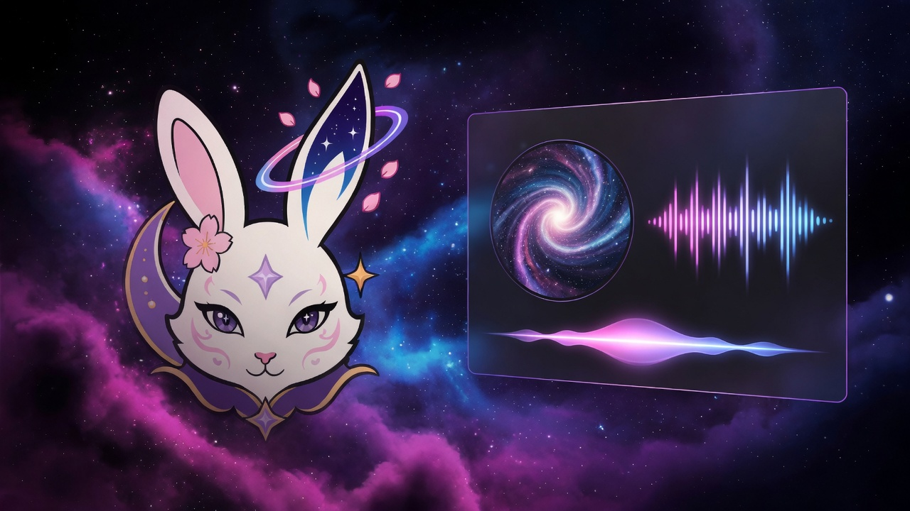

Lecteur personnalisé
Pochette, progression, forme d’onde, couleurs dynamiques selon le morceau.
Application de bureau non officielle : lecteur personnalisé, mini-lecteur, égaliseur, thèmes GalaxyBunny. Votre session reste sur la machine.

Pochette, progression, forme d’onde, couleurs dynamiques selon le morceau.
Toujours visible, en bas à droite, avec lecture, pause, précédent, suivant et volume.
Spectre, réverbe, écho, plusieurs profils sonores.
Nuit, Clair, Cherry, Aurore, Glass Apple, Aero, Musique.
L’app et ce site parlent votre langue.
Contrôles multimédias dans la barre des tâches, session conservée.
Téléchargez l’installateur de la dernière release. Windows SmartScreen peut avertir : l’app n’a pas encore de certificat commercial.
Node.js 22 ou plus.
git clone https://github.com/HanaCherry/SunoApp.git
cd SunoApp
npm install
npm start